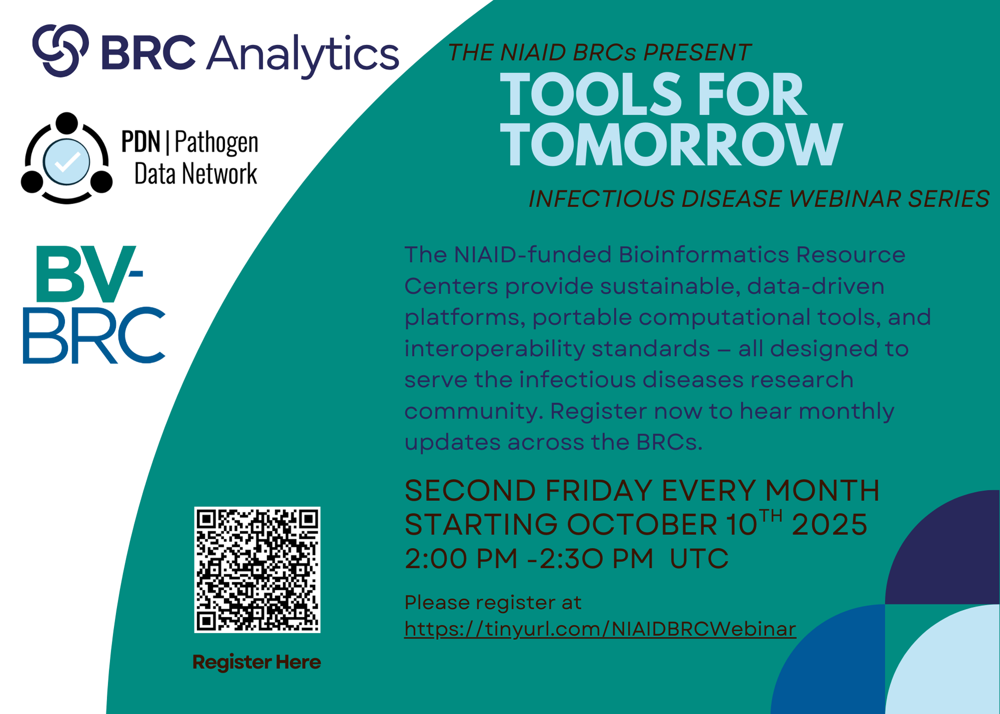

{kind=link}

Tools for Tomorrow NIAID BRCs Webinar Series¶
When: Second Friday Monthly Starting October 10th, 2025
Register Here¶
About the Webinar Series¶
The NIAID-funded Bioinformatics Resource Centers provide sustainable, data-driven platforms, portable computational tools, and interoperability standards — all designed to serve the infectious diseases research community. Register now to hear monthly updates across the BRCs.
The series is recorded and uploaded to the BRC Consortium Youtube Channel and is viewable here
Agenda¶
Rotating Schedule Across BRCs: * September 11th 2026 CDC Pathogen Genomics Centers of Excellence: Special hour long session: to present their analytics tools
September 11th 2026
PDN Presentation
August 14th 2026
BRC Analytics Cyclospora-related resources
July 10th 2026
BV-BRC Viral Family Level Phylogenetic Trees Recording
June 12th 2026
Cross BRC Ebola Virus Update Recording
May 22nd 2026
SPECIAL Cross BRC Joint Hantavirus Outbreak Response Webinar Recording
May 8th 2026
PDN: Viralzone Presentation
April 10th 2026
Differential Gene Expression with BRC Analytics Recording
March 13th 2026
NCBI: Genbank and SRA Data Submission - Special hour long session Recording
February 13th 2026
BV-BRC: Influenza Reassortment Analysis Service running USDA Flu Crew’s TreeSort tool Recording
January 9th 2026
PDN Updates: Loculus Overview Recording
December 12th 2025
BRC Analytics Updates: Fungal Genomics Recordinng
November 14th 2025
BV-BRC Updates and new outbreak services: Core Genome MLST and Whole Genome SNP Analysis Recording
October 10th 2025
Introduction to all 3 of our BRCs BV-BRC
This agenda will be updated closer to each month with more information about the presentations for any given month.
Upon Registration you will receive a calendar invite with the webinar details.